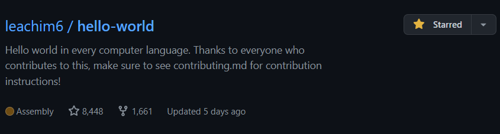

在逛Github的时候，我突然发现了一个挺有趣的项目：每种计算机语言的Hello-World。 (项目地址) 当时就随便看了一眼，好家伙，整整 8448 个starts。该项目目前已经收录了934种语言。
这个项目让我了解了很多原本不知道的语言。像什么：Axe,BAIK,c--,D♭♭,Ebuild,Fim++,Golo,Hack等等;反正就是八仙过海各显神通罢了:)
我们来看看它的hello world吧：
代码在此：
dlroW olleH(@)
啊喂！你这代码都反过来了啊！！...怎么说呢，这写代码的时候还得用Unicode的RLO字符写的吗:( 不行，换一个。X
我们来看看它的hello world吧：
代码在此：
💬Hello World💬➡
说真的，第一眼看到它的时候我还挺好奇：这年头连Emoji都可以写代码的吗？？当我打开它的时候发现它没让我失望，这熟悉的表情包，还挺有趣的，只能说是YYDS！√
我们来看看它的hello world:
代码在此：
FROM "Hello World" TO OUT
中文直译过来是：从这里到那里，而且写起代码来也还真是从这里到那里...它的hello world:从“Hello world”到退出，非常符合逻辑、没有丝毫问题。√
我们来看看它的hello world:
代码在此：
h
啊哈哈，不，你没有看错，它要输出hello world确实只要打出一个"h",它的官方文档也详细说明了：每当遇到'H'或'h'时，hello++将打印出"Hello World"。它将忽略所有其他字符。(Hello++官方文档)这样在我们输出Hello world的时候也确实便利了不少（指9个字母）√
我们来看看它的hello world:
代码在此：
#!usr/bin/python
yo just print like "Hello World" bro
这个代码真就像在跟计算机对话似的：哟，只需要打印“Hello world”兄弟；推荐喜欢rap的人来试试😜√
我们来看看它的hello world:
代码在此：
;-~~~~~> ;P ;~~> ;P ;------> ;-P ;--> ;P ;D ;~~---> ;P ;| ;~~< ;----> ;P
;~---------> ;P ;--> ;P ;-----< ;P ;-------< ;P ;D ;> ;P ;~< ;-------< ;P
我不理解...😅X
我们来看看它的hello world:
代码在此：
💬🔤👋🗺️🔤
哇，这比上面的Emoji还Emoji😲，这种代码虽然好看，但真的会有人看得懂吗，哈哈🙈X
我们来看看它的hello world:
火星文代码在此：
姠屛募潑鎹牸苻賗：【沵恏，迣鎅】。
蔠圵姟珵垿。
文言代码在此：
吾有一言。曰「「Hello World」」。書之。
易语言代码在此：
调试输出(“Hello World”）
优雅！优雅！只能说是太优雅了！😀
先说说火星文，哇，不亏是火星文，这优雅的代码，这有节奏的韵律，实在太....好吧，不装了，我看不懂:)
然后是我们的第二位选手：文言，啊！多亏了文言，让那些学文的朋友们也能沉浸在编程的世界里，，反正我是连字都打不出来😎
最后便是我们最厉害、最有影响力的易语言了，它历史悠久，其最早的版本的发布可追溯至2000年9月11日。它原生支持许多库和模块，语法的简练早已超过了C、C++、Java等各类编程语言，但因为美国某些关系的限制，它只要一出现便会报错、一发出去便会报错，即便简单易写，但因为限制，我还是放弃了它。😢
我真心希望中国能够拥有属于自己的一套编程语言，我也希望某些国家能够以和平交流的心态接纳中国，一起构建人类命运共同体，一起向未来👨👨🏻👨🏼👨🏽👨🏾👨🏿
🎵本期背景音乐：ふたりの気持ち
感谢观看，我是冰渊(IceAbyss)，我们下期再见:)👋👋🏻👋🏼👋🏽👋🏾👋🏿
若有错漏或者维权的地方请联系我->邮箱📧iceabyss545@gmail.com